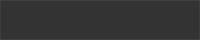

Ghostly Affection
链接
关于本网站的链接
本网站链接自由。横幅随意使用。可直接链接。
 88*31
88*31
网站名 : Ghostly Affection / 地址 : http://www.tarupito.net
横幅地址 : http://www.tarupito.net/image/banner.jpg
关照过我的各位 & 网站
spica : 发布酷炫的设计模板
 ainezunouzu : 发布可爱的字体
ainezunouzu : 发布可爱的字体
 Ponytail Spirits : 喜欢马尾辫
Ponytail Spirits : 喜欢马尾辫

TAKENOHA : 使用照片素材
网站运营者链接